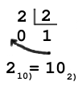
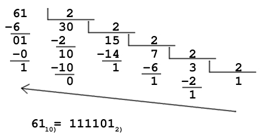
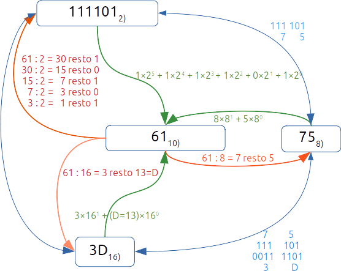

Sistemas de numeración#
Un sistema de numeración es un conjunto de reglas y convenciones utilizadas para representar cantidades numéricas mediante símbolos.
El sistema decimal es un sistema de numeración que utiliza diez símbolos diferentes para representar cantidades numéricas: 0, 1, 2, 3, 4, 5, 6, 7, 8 y 9.
El sistema binario es un sistema de numeración que utiliza dos símbolos diferentes para representar cantidades numéricas: 0, 1
El sistema octal es un sistema de numeración que utiliza ocho símbolos diferentes para representar cantidades numéricas: 0, 1, 2, 3, 4, 5, 6, 7
El sistema hexadecimal es un sistema de numeración que utiliza dieciséis símbolos diferentes para representar cantidades numéricas: 0, 1, 2, 3, 4, 5, 6, 7, 8, 9, A, B, C ,D, E y F
Tabla de los 17 primeros números
HEX |
DEC |
OCT |
BIN |
|---|---|---|---|
0 |
0 |
0 |
0 |
1 |
1 |
1 |
1 |
2 |
2 |
2 |
10 |
3 |
3 |
3 |
11 |
4 |
4 |
4 |
100 |
5 |
5 |
5 |
101 |
6 |
6 |
6 |
110 |
7 |
7 |
7 |
111 |
8 |
8 |
10 |
1000 |
9 |
9 |
11 |
1001 |
A |
10 |
12 |
1010 |
B |
11 |
13 |
1011 |
C |
12 |
14 |
1100 |
D |
13 |
15 |
1101 |
E |
14 |
16 |
1110 |
F |
15 |
17 |
1111 |
10 |
16 |
20 |
10000 |
Conversión de base N a decimal#
(Teorema fundamental de la numeración)
Ejemplo:
\(111101_{2)} = 1×2^5 + 1×2^4 + 1×2^3 + 1×2^2 + 0×2^1 + 1×2^0 = 61_{10)}\)
\(75_{8)} = 7×8^{1} + 5×8^{0} = 61_{10)}\)
\(331_{4)} = 3×4^2 + 3×4^1 + 1×4^0 = 61_{10)}\)
\(3D_{16)} = 3×16^1 + (D=13)×16^0 = 61_{10)}\)
Base decimal a base N#
{kind=link}
Ejemplo de base decimal a base binaria 61 10) → 2)
{kind=link}
Ejemplo de base decimal a base octal 61 10) → 8)
61 : 8 = 7 resto 5
61 10) = 75 8)
Ejemplo de base decimal a base hexadecimal 61 10) → 16)
61 : 16 = 3 resto 13
61 10) = 3(13=D) = 3D 16)
Base N a base M ≠ N ≠ 10#
(TFM) pasamos a base M → base 10
De base 10 a base N
Ejemplo: Como se escribiría 21 12) en base 5
\(21_{12)} = 2 \times 12^{1} + 1 \times 12^0 = 25_{10)}\) →
Ejemplo: Como se escribe 2A 15) en base 3
\(2A_{15)} = 2 \times 15^1+A \times 15^0 = 30 + A = 30 + 10 = 40_{10)} =\)
Cambio de base por agrupaciones (binaria, octal, hexadecimal)#
Para el caso de la base 2,8 y 16, podemos hacer agrupaciones 8 → (3,3) y en 16 → (4,4)
Ejemplo 1000 10) = 0011 1110 1000 2)
Queda:
3E8 16) = 0011 1110 1000 2) = 1750 8) = 1000 10)
